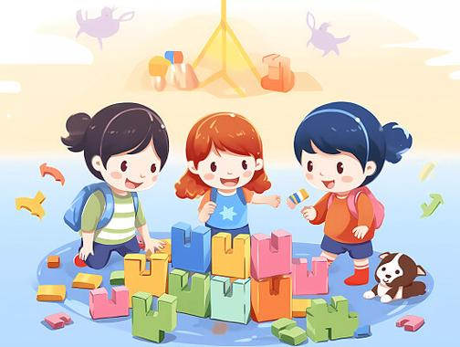
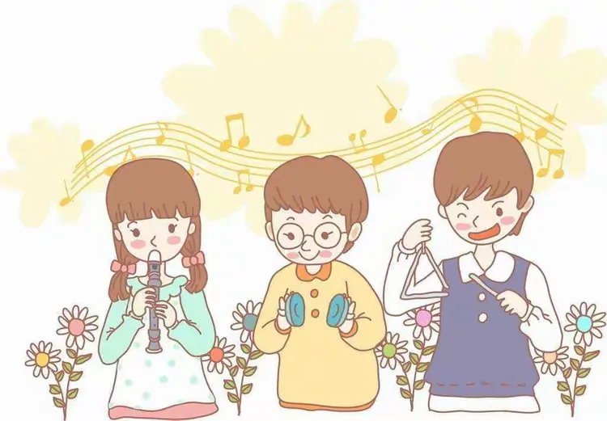
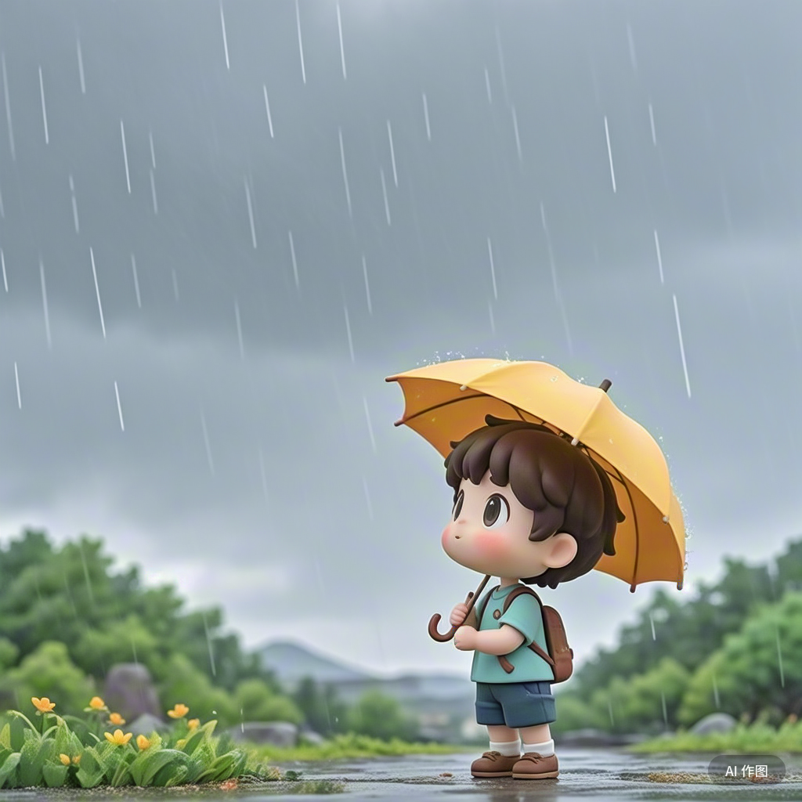
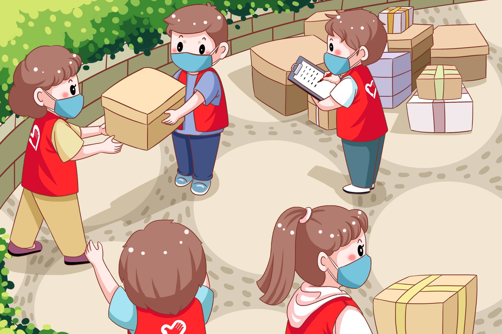

更多成长故事

小华的手工乐园
9岁的小华擅长折纸，他的作品曾被选为班级装饰，去年更是凭借《森林家族》获得学校创意手工奖，让我们一起看看他的手工之旅...

小宇的音乐之路
12岁的小宇学习尤克里里2年，从手指按弦疼痛到独立弹唱，校园艺术节上的表演更是赢得全场掌声，他的坚持让人感动...

小雨的自然探索记
10岁的小雨热爱大自然，周末总爱跟着爸爸去郊外观察动植物，还制作了自己的自然笔记，记录下无数有趣的发现...
小浩的编程启蒙
11岁的小浩偶然接触编程后便一发不可收拾，从简单的小游戏制作到参与学校编程比赛，用代码创造属于自己的世界...

小诺的校园志愿者
13岁的小诺是学校志愿者团队的核心成员，坚持服务敬老院、整理图书角，用行动传递温暖，成为同学们的榜样...
小冉的绘画追梦记
9岁的小冉患有轻度色盲，却凭借对绘画的热爱和不懈努力，作品多次入选少儿美术展，用色彩诠释坚持的力量...